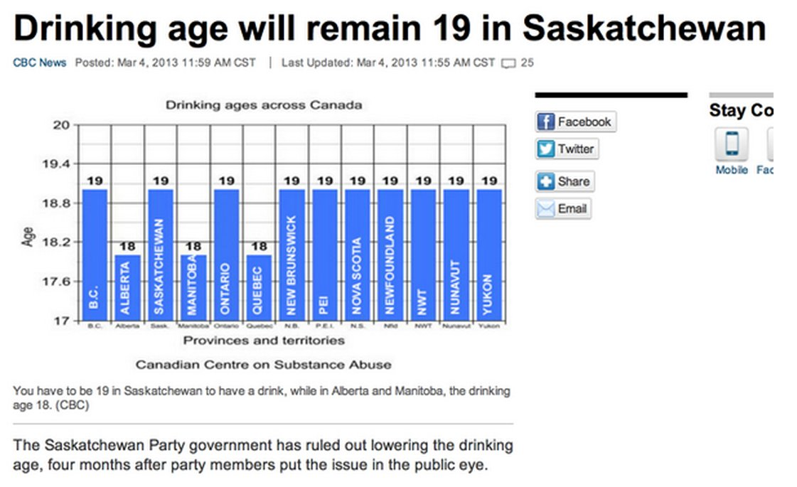
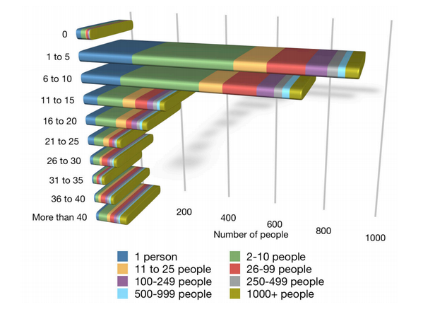
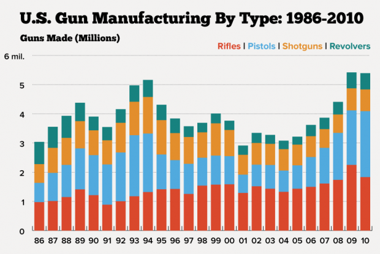

bar charts, according to A Abuela's diagram, bar charts are best utilized when the visualization is showing a comparison among items with one variable per item, few categories and few items.
What are the limitations of the project?

Point of View
"The image below shows the first published bar chart, created by William Playfair in 1781. The creation of this chart was inspired by Joseph Priestley's 1765 timeline charts. Playfair utlized this type of chart, because he was lacking time series-data. According to Beniger and Robyn, "His bar chart was the first quantitative graphic form that did not locate data either in space (as did coordinated and tables) or tieme (as did Priestley's time-lines). It constitutes a pure solutions ot the problem of disrete quantitative comparison."
CONTENT
DESIGN
Does it achieve everything it set out to do? (No)
When using the filter system, the curves for the selected demographic move above the axis and all other victims move below. The quantity of curves does not appear to be accurately correlated, visually, to the percentages of victims on display.


PROS
Shows floating text boxes for explanation when hovering over the graphs:
Provides multiple combinations of filters:

Presents the data in two forms (interactive visualization & curve chart):

Clicking the curve can lead to the link of the news item reporting the death (though some links are expired):


CONS
No legend to explain the gradient yellow color of the curves (we suspect it's to make the overlapping curves legible, but it's not actually explained):

- Difficult to compare the graphs among different filters to reach further conclusions.
- Ambiguous and loaded words like "People Killed" and "Stolen Years" doesn't explain difference between 2010 dataset (homicides) and 2013 dataset (suicides & homicides).